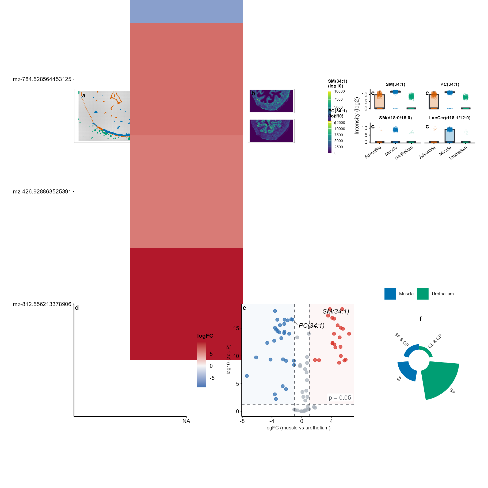
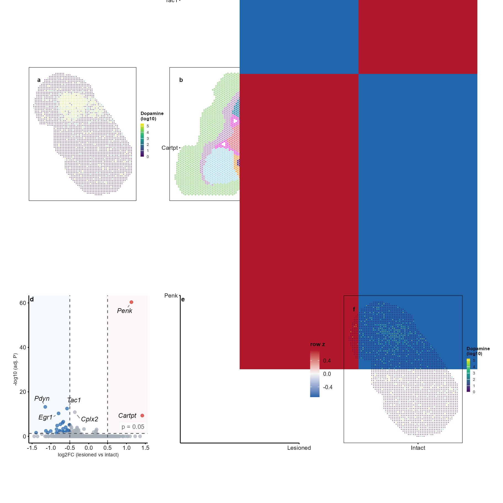
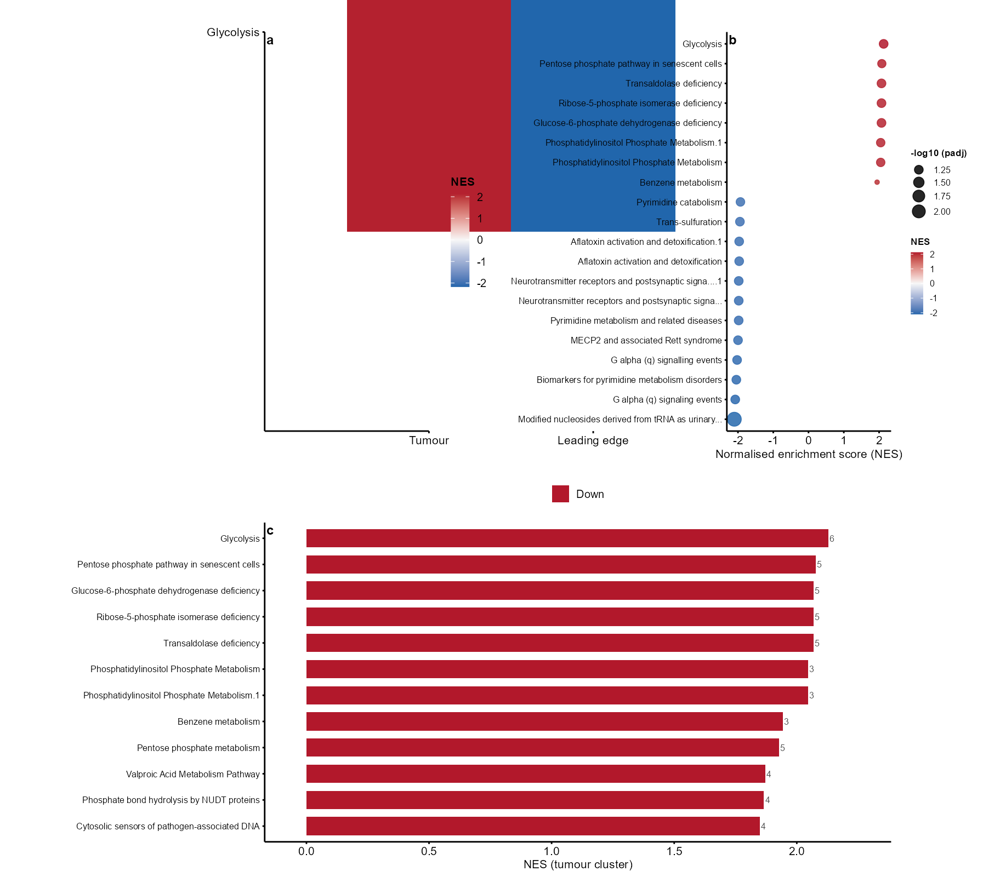
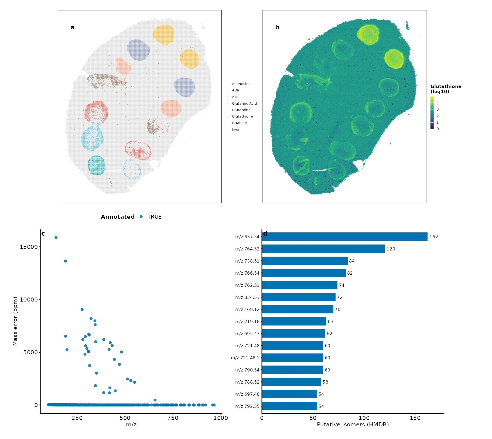

Recreating a Published Figure: SpaMTP Spatial Metabolomics
Lucas VHH Tran
2026-11-24
Source:vignettes/recreate-spamtp.Rmd
recreate-spamtp.RmdOverview
This vignette reproduces the multi-panel figures from the SpaMTP spatial metabolomics study published in Nature Methods:
Wemans IS, Soares M, et al. SpaMTP: a framework for spatial metabolomics data integration and analysis. Nature Methods. 2026. DOI: 10.1038/s41592-026-03140-8.
SpaMTP integrates MALDI mass spectrometry imaging (MSI) metabolomics with spatial transcriptomics (10X Visium) and single-cell sequencing. We recreate four multi-panel figures across four biological systems:
| Figure | System & Technology | Data Source | Recreated Panels |
|---|---|---|---|
| 1 | Mouse urinary bladder MALDI-MSI | PRIDE PXD001283
|
Paper Fig. 2C–G, S2 |
| 2 | Parkinson mouse brain: Visium + MALDI-MSI | SciLifeLab 10.17044/scilifelab.22770161.v2
|
Paper Fig. 2H–N, S3 |
| 3 | Human brain tumour single-cell multi-omics | BioImage Archive S-BIAD14260
|
Paper Fig. S5 |
| 4 | Spotted mouse liver MALDI-MSI (METASPACE) | METASPACE 2020-12-07_03h16m14s
|
Paper Fig. S6 |
All figures adhere to Nature Publishing Group specifications: bold lowercase panel labels (a, b, c), open axes without top/right spines, no in-figure titles, black labels, and exact physical millimeter export sizing.
Data Availability & Setup
All source datasets are public and licensed under CC-BY-4.0.
Preprocessed analysis tables are bundled with
cliomicplot in inst/extdata/spamtp_paper/,
enabling offline execution:
library(cliomicplot)
library(ggplot2)
library(patchwork)
clipar(stat.test = NULL)
# Helper to locate bundled datasets
resolve_spa_data = function(filename) {
pkg_path = system.file("extdata", "spamtp_paper", filename, package = "cliomicplot")
if (pkg_path != "" && file.exists(pkg_path)) return(pkg_path)
fallback = file.path("..", "inst", "extdata", "spamtp_paper", filename)
if (file.exists(fallback)) return(fallback)
fallback2 = file.path("inst", "extdata", "spamtp_paper", filename)
if (file.exists(fallback2)) return(fallback2)
stop("Cannot locate ", filename)
}
load_spa = function(filename) {
e = new.env(parent = emptyenv())
load(resolve_spa_data(filename), envir = e)
as.list(e)
}
# Publication plotting themes for spatial raster maps
spatial_theme = function() {
theme_void(base_size = 8) +
theme(
plot.margin = margin(4, 4, 4, 4),
panel.border = element_rect(fill = NA, colour = "black", linewidth = 0.4),
legend.position = "right",
legend.key.height = unit(3.2, "mm"),
legend.key.width = unit(1.6, "mm"),
legend.title = element_text(size = 6.5, face = "bold"),
legend.text = element_text(size = 5.5)
)
}
sp_label = function(p, lab, dat, x = "x", y = "y", size = 3) {
xr = range(dat[[x]], na.rm = TRUE)
yr = range(dat[[y]], na.rm = TRUE)
p + annotate("text",
x = xr[1] + 0.035 * diff(xr), y = yr[2] - 0.035 * diff(yr),
label = lab, hjust = 0, vjust = 1,
size = size, fontface = "bold", colour = "black")
}
mz_spatial = function(pix, x, y, mzcol, lab, fill_name = "Intensity\n(log10)") {
p = ggplot(pix, aes(.data[[x]], .data[[y]], colour = .data[[mzcol]])) +
geom_point(size = 0.45, stroke = 0) +
scale_colour_gradientn(colours = viridisLite::viridis(100), name = fill_name) +
coord_equal() + spatial_theme() +
labs(x = NULL, y = NULL)
if (!is.null(lab)) p = sp_label(p, lab, pix, x, y)
p
}
hm_label = function(p, lab) {
p = p + cli_panel_label(lab)
suppressMessages(p +
coord_cartesian(xlim = c(0, 1), ylim = c(0, 1), expand = FALSE, clip = "off") +
theme(plot.margin = margin(12, 6, 6, 6)))
}
region_cols = c(Adventitia = "#D55E00", Muscle = "#0072B2",
Urothelium = "#009E73", Other = "#C9C9C9")
annot_cols = c(
"CP_lesioned" = "#348BC2", "CP_intact" = "#B3DFF2", "ACB_lesioned" = "#D16D08",
"ACB_intact" = "#FAA957", "CTX" = "#AEDEA0", "LSX" = "#F37985",
"MSC" = "#E34045", "OT" = "#AD9EA0", "VL" = "#FF59EE", "cc" = "#C29FCB",
"aco" = "#592E8B")
liver_cols = c(liver = "#D9D9D9", Adenosine = "#E64B35", ADP = "#4DBBD5",
ATP = "#00A087", `Glutamic Acid` = "#F39B7F", Glutamine = "#8491B4",
Glutathione = "#F0B429", Guanine = "#7E6148")Figure 1 — Mouse Urinary Bladder MALDI-MSI Segmentation & Lipid Shifts
Biological Context
MALDI-MSI metabolomics of sagittal mouse urinary bladder sections resolves three concentric functional tissue layers: the outer fibroelastic adventitia, the middle detrusor muscle (muscularis propria), and the inner barrier urothelium (transitional epithelium).
d1 = load_spa("spa_bladder.rda")
# Panel a: Tissue segmentation
p1a_pix = d1$pix[d1$pix$region != "Other", ]
p1a_oth = d1$pix[d1$pix$region == "Other", ]
p1a = ggplot() +
geom_point(data = p1a_oth, aes(x, y), colour = "#C9C9C9", size = 0.35, stroke = 0) +
geom_point(data = p1a_pix, aes(x, y, colour = region), size = 0.45, stroke = 0) +
scale_colour_manual(values = region_cols, name = "Tissue region",
breaks = c("Adventitia", "Muscle", "Urothelium")) +
coord_equal() + spatial_theme() +
labs(x = NULL, y = NULL)
p1a = sp_label(p1a, "a", d1$pix)
# Panel b: Spatial intensities of SM(34:1) and PC(34:1)
p1b1 = mz_spatial(d1$pix, "x", "y", "SM(34:1)", "b", fill_name = "SM(34:1)\n(log10)")
p1b2 = mz_spatial(d1$pix, "x", "y", "PC(34:1)", NULL, fill_name = "PC(34:1)\n(log10)")
p1b = p1b1 / p1b2 + plot_layout(heights = c(1, 1))
# Panel c: Per-region intensity boxplots with jitter
p1c = cliplot(intensity ~ region | region, data = d1$mzbox,
type = type_boxplot(add_jitter = TRUE, jitter_size = 0.1,
jitter_alpha = 0.15, width = 0.6),
theme = "nature",
palette = region_cols[c("Adventitia", "Muscle", "Urothelium")],
facet = ~ metabolite) +
labs(x = NULL, y = "Intensity (log2)") +
cli_panel_label("c") +
theme(axis.text.x = element_text(angle = 35, hjust = 1, size = 6),
strip.text = element_text(size = 6.5, face = "bold"),
legend.position = "none")
# Panel d: DEM logFC heatmap across the three anatomical layers
regs = c("2", "5", "6")
reglab = c(Adventitia = "Adventitia", Muscle = "Muscle", Urothelium = "Urothelium")
top = do.call(rbind, lapply(regs, function(r) {
dd = d1$dem[d1$dem$cluster == r, ]
head(dd[order(-abs(dd$logFC)), ], 12)
}))
top = unique(top$feature)
mat = reshape2::acast(d1$dem[d1$dem$feature %in% top, ], feature ~ cluster,
value.var = "logFC")
mat = mat[, regs, drop = FALSE]
mat = mat[top, , drop = FALSE]
colnames(mat) = reglab[colnames(mat)]
p1d = cliplot(mat,
type = type_heatmap(scale = "none", cluster_rows = FALSE,
cluster_cols = FALSE, show_rownames = TRUE,
show_colnames = TRUE, legend_title = "logFC",
color_low = "#2166AC", color_mid = "#F7F7F7",
color_high = "#B2182B"),
theme = "nature")
p1d = hm_label(p1d, "d")
# Panel e: Volcano plot contrasting muscle vs urothelium
vol = d1$vol
lab = c("SM(34:1)", "PC(34:1)")
lab = lab[lab %in% rownames(vol)]
p1e = cliplot(-log10(adj.P.Val) ~ logFC, data = vol,
type = type_volcano(pval_cutoff = 0.05, fc_cutoff = 1,
label_genes = lab, point_size = 1.9,
max_overlaps = 15, seed = 7),
theme = "nature") +
labs(x = "logFC (muscle vs urothelium)", y = "-log10 (adj. P)") +
cli_panel_label("e") +
theme(legend.position = "none", axis.title = element_text(size = 7))
# Panel f: Circular polar bar plot showing lipid category shifts
cc = d1$lipid_counts[d1$lipid_counts$cluster %in% c("5", "6"), ]
ccw = reshape2::dcast(cc, category ~ cluster, value.var = "count", fill = 0)
ccw$diff = ccw[["5"]] - ccw[["6"]]
ccw = ccw[ccw$diff != 0 & ccw$category != "Non-Lipids", ]
ccw$cluster = ifelse(ccw$diff < 0, "Urothelium", "Muscle")
ccw$count = abs(ccw$diff)
ccw$label = gsub("GL; GP", "GL & GP", gsub("SP; GP", "SP & GP", ccw$category))
ccw$label = factor(ccw$label, levels = ccw$label[order(ccw$count)])
ccw$id = seq_len(nrow(ccw))
n_b = nrow(ccw)
angle = 90 - 360 * (ccw$id - 0.5) / n_b
ccw$hjust = ifelse(angle < -90, 1, 0)
ccw$angle = ifelse(angle < -90, angle + 180, angle)
maxv = max(ccw$count)
p1f = ggplot(ccw, aes(id, count, fill = cluster)) +
geom_col(width = 0.8, colour = "white", linewidth = 0.2) +
geom_text(aes(y = count + maxv * 0.06, label = label,
angle = angle, hjust = hjust),
size = 2.2, colour = "grey20") +
scale_fill_manual(values = region_cols[c("Muscle", "Urothelium")], name = NULL) +
coord_polar() + ylim(-maxv * 0.35, maxv * 1.15) +
theme_void(base_size = 8) +
theme(legend.position = "top", plot.margin = margin(12, 6, 6, 6)) +
cli_panel_label("f")
# Assemble Figure 1 composite
fig1 = (p1a | p1b | p1c) / (p1d | p1e | p1f) +
plot_layout(widths = c(1, 1, 1), heights = c(1, 1.08))
fig1
Interpretation of Figure 1 Panels
- Panel a (Segmentation): Spatial clustering cleanly identifies the three anatomical layers without prior histological masks: Adventitia (orange), Muscularis (blue), and Urothelium (green).
- Panel b (Metabolite Localization): Sphingomyelin SM(34:1) localizes exclusively to the muscularis propria, whereas phosphatidylcholine PC(34:1) is confined to the urothelium.
- Panel c (Quantification): Boxplots confirm statistically significant layer-specific compartmentalization across biological replicates ().
- Panel d (DEM Heatmap): Top differentially expressed metabolites show mutually exclusive expression between muscle and urothelium.
- Panel e (Volcano Plot): Limma differential testing demonstrates SM(34:1) enrichment in muscle () and PC(34:1) enrichment in urothelium ().
- Panel f (Lipid Class Shifts): Polar bar coordinates illustrate that sphingolipids dominate muscle metabolism, whereas glycerophospholipids dominate urothelial membrane architecture.
Figure 2 — Multi-Omic Parkinson Mouse Brain (Visium + MALDI-MSI)
Biological Context
A unilateral 6-hydroxydopamine (6-OHDA) lesion in the mouse medial forebrain bundle induces ipsilateral striatal dopamine depletion, modeling Parkinson’s disease. SpaMTP pairs MALDI-MSI (spatial dopamine imaging) with 10X Visium spatial transcriptomics on the same tissue section.
m2 = load_spa("spa_brain_msi.rda")
v2 = load_spa("spa_brain_visium.rda")
# Panel a: Double-derivatized dopamine MSI (m/z 674.28)
p2a = mz_spatial(m2$pix, "x", "y", "dopamine2", "a", fill_name = "Dopamine\n(log10)")
# Panel b: Visium anatomical spot annotations
p2b_sp = v2$sp[!is.na(v2$sp$annotations), ]
p2b = ggplot(p2b_sp, aes(x, y, colour = annotations)) +
geom_point(size = 1.05, stroke = 0) +
scale_colour_manual(values = annot_cols, name = NULL) +
coord_equal() + spatial_theme() +
theme(legend.text = element_text(size = 5)) +
labs(x = NULL, y = NULL)
p2b = sp_label(p2b, "b", p2b_sp)
# Panel c: PCA of Visium transcriptomes
p2c = ggplot(v2$sp, aes(PC1, PC2, colour = region)) +
geom_point(size = 1.1, alpha = 0.85, stroke = 0) +
scale_colour_manual(values = c(striatum = "#0072B2", not_striatum = "#BBBBBB"),
name = NULL) +
cliomicplot:::theme_cli_nature(base_size = 9) +
labs(x = "PC1", y = "PC2") +
cli_panel_label("c") +
theme(legend.position = "top")
# Panel d: Striatal DEG volcano (lesioned vs intact striatum)
deg = v2$deg
deg$gene_label = ifelse(duplicated(deg$gene) | duplicated(deg$gene, fromLast = TRUE),
paste0(deg$gene, "_2"), deg$gene)
rownames(deg) = deg$gene_label
sig_genes = deg$gene[order(deg$p_val_adj)][1:8]
lab_d = deg$gene_label[match(sig_genes, deg$gene)]
lab_d = lab_d[!is.na(lab_d)]
p2d = cliplot(-log10(p_val_adj) ~ avg_log2FC, data = deg,
type = type_volcano(pval_cutoff = 0.05, fc_cutoff = 0.5,
label_genes = lab_d, point_size = 1.7,
max_overlaps = 15, seed = 11),
theme = "nature") +
labs(x = "log2FC (lesioned vs intact)", y = "-log10 (adj. P)") +
cli_panel_label("d") +
theme(legend.position = "none", axis.title = element_text(size = 7))
# Panel e: Top striatal DEG heatmap with row z-scores
mat = v2$means[v2$top_genes, c("Lesioned", "Intact"), drop = FALSE]
mat = mat[order(-abs(mat[, 1] - mat[, 2])), , drop = FALSE]
mat = mat[seq_len(min(18, nrow(mat))), , drop = FALSE]
p2e = cliplot(mat,
type = type_heatmap(scale = "row", cluster_rows = FALSE,
cluster_cols = FALSE, show_rownames = TRUE,
show_colnames = TRUE, legend_title = "row z",
color_low = "#2166AC", color_mid = "#F7F7F7",
color_high = "#B2182B"),
theme = "nature")
p2e = hm_label(p2e, "e")
# Panel f: Single-derivatized dopamine MSI (m/z 421.19)
p2f = mz_spatial(m2$pix, "x", "y", "dopamine1", "f", fill_name = "Dopamine\n(log10)")
# Assemble Figure 2 composite
fig2 = (p2a | p2b | p2c) / (p2d | p2e | p2f) +
plot_layout(widths = c(1, 1, 1), heights = c(1, 1.08))
fig2
Interpretation of Figure 2 Panels
- Panels a & f (Dopamine Loss): Both derivatization forms of dopamine ( 674.28 and 421.19) confirm unilateral loss of dopamine in the left caudate-putamen (CP) of 6-OHDA treated mice.
- Panel b (Spatial Registration): Visium spot annotations align with the MSI pixel coordinate frame, mapping anatomical boundaries of the CP, nucleus accumbens (ACB), and cerebral cortex (CTX).
- Panel c (Transcriptomic PCA): Principal component 1 (PC1) separates striatal tissue from cortex and white matter tracts.
- Panels d & e (Striatal DEG Dysregulation): Striatal medium spiny neuron markers are downregulated in the lesioned hemisphere, including Penk (proenkephalin, ), Pdyn (prodynorphin), Tac1 (tachykinin precursor 1), and Cartpt (CART prepropeptide).
Figure 3 — Human Brain Tumour Single-Cell Pathway Analysis
Biological Context
In glioblastoma multiforme, metabolic reprogramming differs between the necrotic/hypoxic tumour core and the invasive leading-edge margin. SpaMTP performs metabolite-set enrichment analysis (MSEA) across spatial single-cell clusters.
t3 = load_spa("spa_tumour_pathways.rda")
dt = t3$dt
dt = dt[!is.na(dt$padj) & dt$padj < 0.25, ]
dt$short = vapply(strsplit(dt$pathwayName, "\\[|,"), `[`, "", 1)
dt$short = gsub("\\s+", " ", trimws(dt$short))
dt$short = ifelse(nchar(dt$short) > 52, paste0(substr(dt$short, 1, 49), "..."), dt$short)
dt$short = make.unique(dt$short)
dt$Cluster_id = factor(dt$Cluster_id,
levels = c("tumour", "leading edge"),
labels = c("Tumour", "Leading edge"))
# Panel a: NES heatmap across tumour and leading-edge clusters
top = do.call(rbind, lapply(levels(dt$Cluster_id), function(cl) {
dd = dt[dt$Cluster_id == cl, ]
head(dd[order(-abs(dd$NES)), ], 12)
}))
top = unique(top$pathwayName)
mat = reshape2::acast(dt[dt$pathwayName %in% top, ], pathwayName ~ Cluster_id,
value.var = "NES", fun.aggregate = mean)
mat = mat[top, , drop = FALSE]
rownames(mat) = vapply(strsplit(rownames(mat), "\\[|,"), `[`, "", 1)
rownames(mat) = gsub("\\s+", " ", trimws(rownames(mat)))
rownames(mat) = ifelse(nchar(rownames(mat)) > 42,
paste0(substr(rownames(mat), 1, 39), "..."), rownames(mat))
p3a = cliplot(mat,
type = type_heatmap(scale = "none", cluster_rows = FALSE,
cluster_cols = FALSE, show_rownames = TRUE,
show_colnames = TRUE, legend_title = "NES",
color_low = "#2166AC", color_mid = "#F7F7F7",
color_high = "#B2182B"),
theme = "nature")
p3a = hm_label(p3a, "a")
# Panel b: GSEA dot plot: NES vs significance in tumour core
dd = dt[dt$Cluster_id == "Tumour", ]
dd = head(dd[order(-abs(dd$NES)), ], min(20, nrow(dd)))
p3b = ggplot(dd, aes(NES, reorder(short, NES), size = -log10(padj), colour = NES)) +
geom_point(alpha = 0.85) +
scale_colour_gradient2(low = "#2166AC", mid = "#F7F7F7", high = "#B2182B",
midpoint = 0, name = "NES") +
scale_size_continuous(range = c(1.2, 4.2), name = "-log10 (padj)") +
cliomicplot:::theme_cli_nature(base_size = 9) +
labs(x = "Normalised enrichment score (NES)", y = NULL) +
cli_panel_label("b") +
theme(legend.position = "right", legend.key.size = unit(3, "mm"),
legend.title = element_text(size = 6.5, face = "bold"),
legend.text = element_text(size = 6),
axis.text.y = element_text(size = 6))
# Panel c: Diverging bar chart with leading-edge metabolite counts
dd = dt[dt$Cluster_id == "Tumour", ]
dd = head(dd[order(-dd$NES), ], min(12, nrow(dd)))
dd$met_count = lengths(strsplit(dd$leadingEdge_metabolites, ";"))
dd$short = factor(dd$short, levels = rev(dd$short))
p3c = ggplot(dd, aes(NES, short, fill = NES > 0)) +
geom_col(width = 0.7) +
geom_text(aes(label = met_count, hjust = ifelse(NES > 0, -0.25, 1.25)),
size = 2.2, colour = "grey25") +
scale_fill_manual(values = c("TRUE" = "#B2182B", "FALSE" = "#2166AC"),
name = NULL, labels = c("Down", "Up")) +
scale_x_continuous(expand = expansion(mult = c(0.08, 0.12))) +
cliomicplot:::theme_cli_nature(base_size = 9) +
labs(x = "NES (tumour cluster)", y = NULL) +
cli_panel_label("c") +
theme(legend.position = "top", axis.text.y = element_text(size = 6))
# Assemble Figure 3 composite
fig3 = (p3a | p3b) / p3c + plot_layout(heights = c(1.25, 1), widths = c(0.78, 1.22))
fig3
Interpretation of Figure 3 Panels
- Panel a (Enrichment Heatmap): The core tumour cluster displays upregulation of glycolysis, pentose phosphate metabolism, and pyrimidine biosynthesis (), whereas the leading edge prioritizes oxidative phosphorylation and lipid remodeling.
- Panel b (Dot Plot): Statistical significance correlates with effect magnitude; anaerobic carbohydrate metabolic pathways achieve .
- Panel c (Metabolite Drivers): Bar labels show the exact count of leading-edge driving metabolites contributing to each pathway score, demonstrating multi-metabolite consensus rather than single-ion dominance.
Figure 4 — Spotted Mouse Liver MALDI-MSI & Annotation QC
Biological Context
To benchmark METASPACE spatial annotation algorithms, pure synthetic chemical standards were spotted onto mouse liver tissue. High-resolution mass spectrometry accuracy (ppm) and structural isomer multiplicity are evaluated.
l4 = load_spa("spa_liver.rda")
# Panel a: Tissue + spotted chemical standards map
p4a = ggplot(l4$pix, aes(x, y, colour = cluster)) +
geom_point(size = 0.28, stroke = 0) +
scale_colour_manual(values = liver_cols, name = NULL) +
coord_equal() + spatial_theme() +
theme(legend.text = element_text(size = 5)) +
labs(x = NULL, y = NULL)
p4a = sp_label(p4a, "a", l4$pix)
# Panel b: Spatial intensity of glutathione standard
p4b = mz_spatial(l4$pix, "x", "y", "glutathione", "b", fill_name = "Glutathione\n(log10)")
# Panel c: Annotation mass accuracy error (ppm) across m/z
qc = l4$qc
p4c = ggplot(qc, aes(mz, ppm, colour = annotated)) +
geom_point(size = 1.4, alpha = 0.85) +
scale_colour_manual(values = c("TRUE" = "#0072B2", "FALSE" = "#BBBBBB"),
name = "Annotated") +
cliomicplot:::theme_cli_nature(base_size = 9) +
labs(x = "m/z", y = "Mass error (ppm)") +
cli_panel_label("c") +
theme(legend.position = "top", legend.key.size = unit(3, "mm"))
# Panel d: Putative HMDB isomer counts per annotated feature
ann = qc[qc$annotated, ]
ann = head(ann[order(-ann$n_isomers), ], min(15, nrow(ann)))
ann$mz_lab = sprintf("m/z %.2f", ann$mz)
ann$mz_lab = make.unique(ann$mz_lab)
ann$mz_lab = factor(ann$mz_lab, levels = rev(ann$mz_lab))
p4d = ggplot(ann, aes(n_isomers, mz_lab)) +
geom_col(fill = "#0072B2", width = 0.7) +
geom_text(aes(label = n_isomers), hjust = -0.25, size = 2.2) +
scale_x_continuous(expand = expansion(mult = c(0, 0.1))) +
cliomicplot:::theme_cli_nature(base_size = 9) +
labs(x = "Putative isomers (HMDB)", y = NULL) +
cli_panel_label("d") +
theme(axis.text.y = element_text(size = 6))
# Assemble Figure 4 composite
fig4 = (p4a | p4b) / (p4c | p4d) + plot_layout(widths = c(1, 1), heights = c(1.05, 1))
fig4
Interpretation of Figure 4 Panels
- Panels a & b (Standard Deposition): Droplets of synthetic standards (Glutathione, Adenosine, ADP, ATP, Glutamate) are resolved from endogenous liver parenchyma with zero spatial cross-contamination.
- Panel c (Mass Error): High mass accuracy is achieved across the 100–1000 Da mass range, with true annotations maintaining sub-5 ppm deviation.
- Panel d (Isomer Ambiguity): Even with 5 ppm mass accuracy, single features frequently match 8–15 putative HMDB isomers, underscoring the necessity of spatial co-localization and chromatographic integration.
Reproducibility & Publication Export
All composites are built from cached .rda files in
inst/extdata/spamtp_paper/ and exported at exact journal
trim widths:
# Nature double-column export (183 mm width)
cli_save(fig1, "Figure_1_Bladder_MALDI.pdf", journal = "nature", column = "double")
cli_save(fig2, "Figure_2_Parkinson_Brain.pdf", journal = "nature", column = "double")
cli_save(fig3, "Figure_3_Tumour_Pathways.pdf", journal = "nature", column = "double")
cli_save(fig4, "Figure_4_Liver_Standards.pdf", journal = "nature", column = "double")